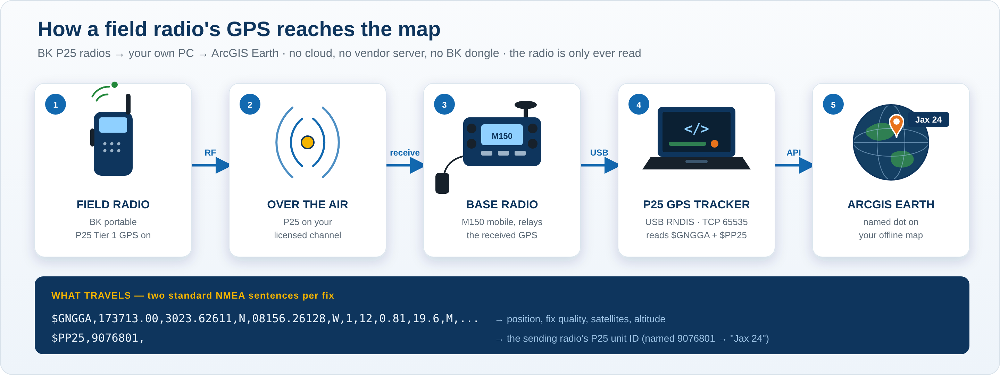
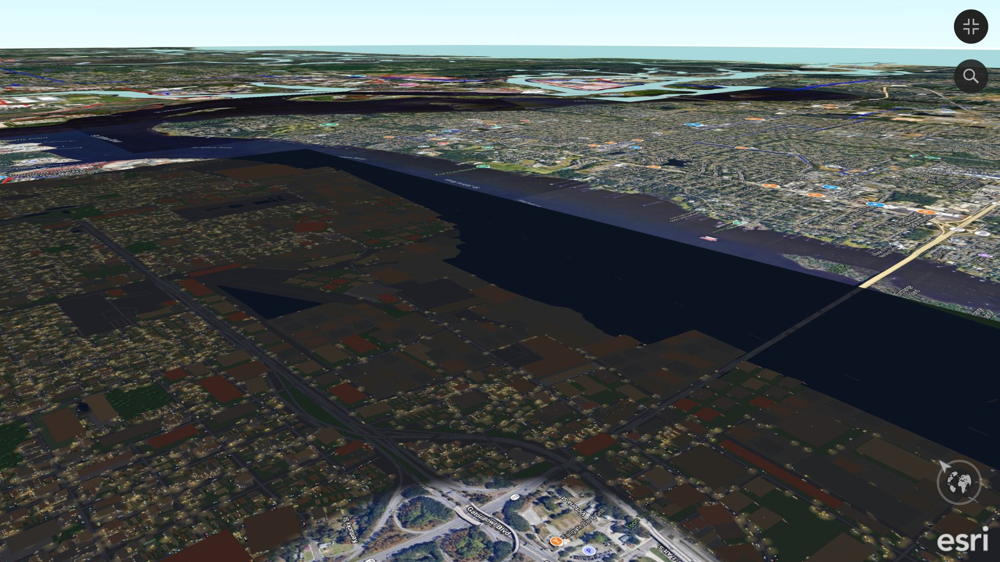

ArcGIS Earth Unlocked
ArcGIS Earth has no offline map-making pipeline, no joystick flight, no way to travel city to city, no easy object authoring and no picture worlds.
Free Windows tools for building offline maps, flying the map with a joystick, adding parcels, hydrants and other public data, placing your own objects, tracking units live and flying into giant pictures, all inside ArcGIS Earth.
🤖 Using AI assistance? Have the agent read the CLAUDE.md file first.
The 10 tools, all in one zip
Download all 10 tools in one zip
![The 10 tools in action: 1 MBTiles converter - QGIS maps offline in ArcGIS Earth; 2 Master 4 Grid Maker - 100 numbered map cells; 3 PRAVE / ME Tracker - radio units live on the map; 4 PRAVE / RMC Tester - bench test without a radio; 5 EarthStick - fly the world with a joystick; 6 World Gate Maker - your own gates, city to city; 7 Object Factory - beacons and objects in the sky; 8 PointLayer - hydrants and public points offline; 9 Parcel100 - click a parcel for owner and address; 10 Picture World Maker - fly into giant pictures](images/ten_tools_montage.jpg)
The project pages
- MBTiles to TPKXOffline maps: MBTiles converter, Master 4 Grid Maker and the TPKX Batch Factory
- ArcGIS Earth Map PlottingP25 GPS Tracker and PRAVE / ME Tracker
- EarthStickFly ArcGIS Earth with a joystick, through World Gates
- Object FactoryBeacons, sky compass and clickable objects
- Point Maps / PointLayerHydrants and other public point data
- Parcel100Clickable property parcels: owner and address
- Picture World MakerTurn giant pictures into maps you can fly into
The world is already built. We add the maps, movement, data, and objects.
Briefing for Esri (PDF) The five gaps, how each tool fills one, and what we learned.
New: P25 GPS Tracker, your radios' GPS on your offline map
The original Holy Grail, achieved: pull GPS straight out of an agency's BK P25 radios and plot each unit — by name — on its own offline ArcGIS Earth imagery. No cloud, no vendor subscription, no BK dongle; the tracker only ever reads the radio. Live-tested on real radios: two portables through a base M150 relay, two separate named units, pinpoint. Download v0.4 · operator guide.

New: Real Sim City, a night city inside the real world
Dark Jacksonville keeps the real lot lines of 8 x 7 km of Jacksonville (31,897 lots from Parcel100) and gives them an invented life: lit houses, cars, streetlights and towers. It sits at its real location, so wherever it leaves a hole, a window into reality, the real Jacksonville shows through. Built in 260 seconds and flown by Claude itself through the ArcGIS Earth API. Test build, not released yet.

Try it in 2 minutes, no Python needed
Install ArcGIS Earth, download one of these already constructed sample KML/KMZ files the tools make and drag it onto the map (or use the + Add data button). They are all near Jacksonville, Florida.
- Live traffic camera: click the floating camera and a live traffic camera opens.
- Beacon: a tall red beacon you can see and fly to from far away.
- Sky Compass: giant N / E / S / W letters in the sky.
- Object set: floating objects you can click for their information.
- World Gates: golden gates from Jacksonville to an Atlanta hub and around the world.
- World Gate: Bryceville ↔ Central Park: a golden gate over Bryceville, Florida, and its partner over Central Park, New York. Put it in EarthStick's Gates folder and fly through.
All downloads, manuals and videos
Every tool, its user manual and a "What's in the zip" sheet are on the main GitHub page.
Download the whole series - all 10 tools in one zip Go to the downloads